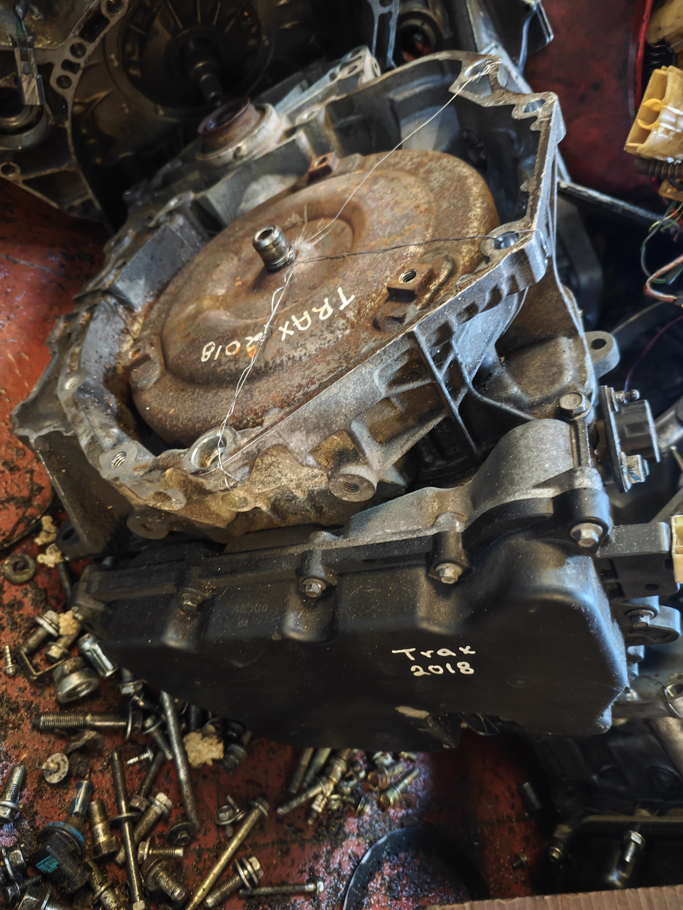
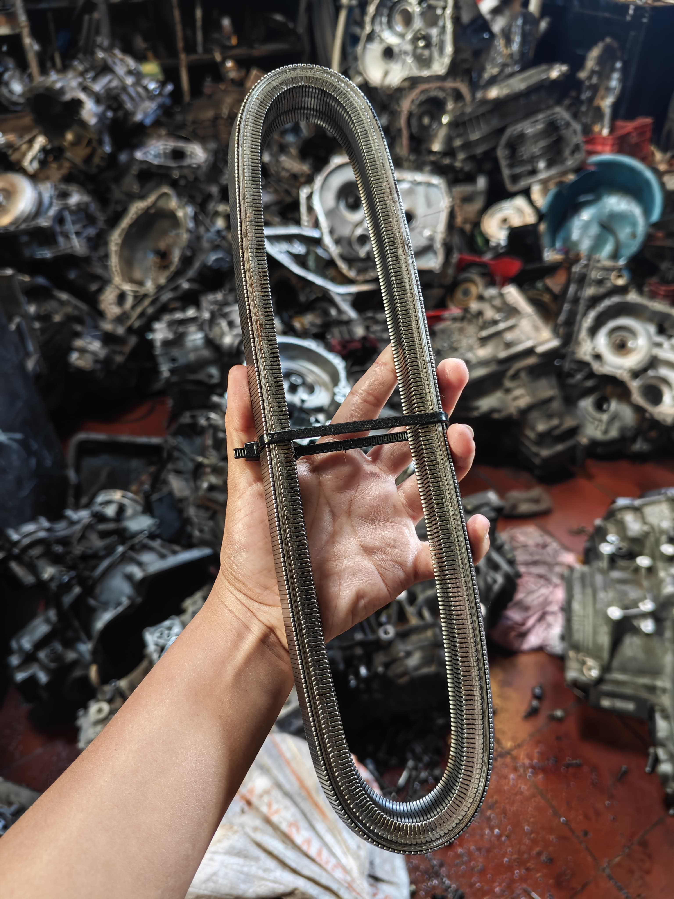
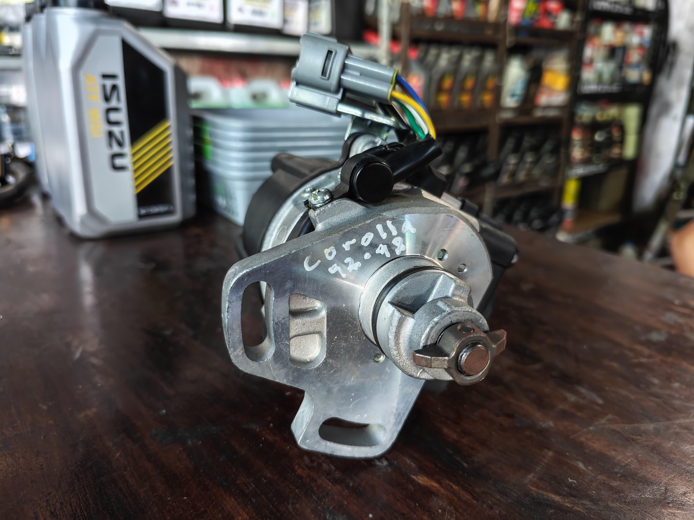

Automotriz Gómez
"Custom and service"
Variedad de Repuestos para su vehiculo

En nuestro establecimiento contamos con una variedad de repuestos para su vehiculos, contamos con variedad de marcas de las cuales podemos mencionar:
Nissan
Toyota
Chevrolet o GM
Hyundai / Kia
Honda
BMW
Volkswagen

Contamos con repuestos para transmision como:
Cadenas
Turbinas
flex
Sensor de velocidad
Yoyos
Discos de pasta
Separadores
Etc.

Contamos con variedad de repuestos como:
Distribuidores
Reservorios
Motor de arranque
Sensores
Halogenos
Kit de halogenos
Filtros de aire - motor
Filtros de Cabina
Carburadores
Fajas de Accesorios
Etc.